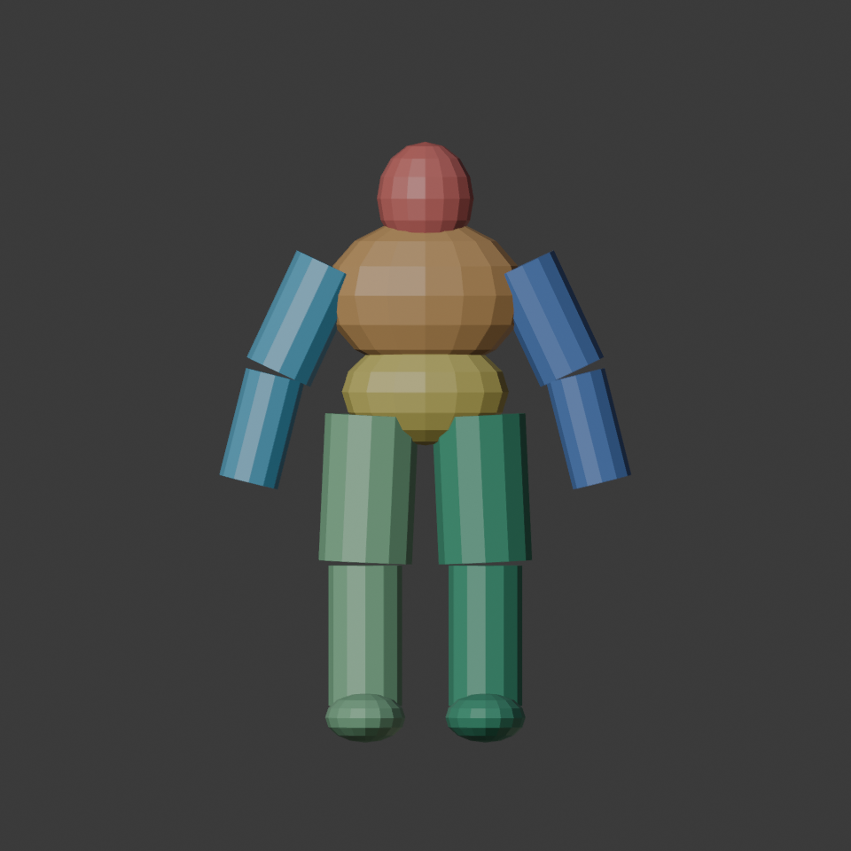
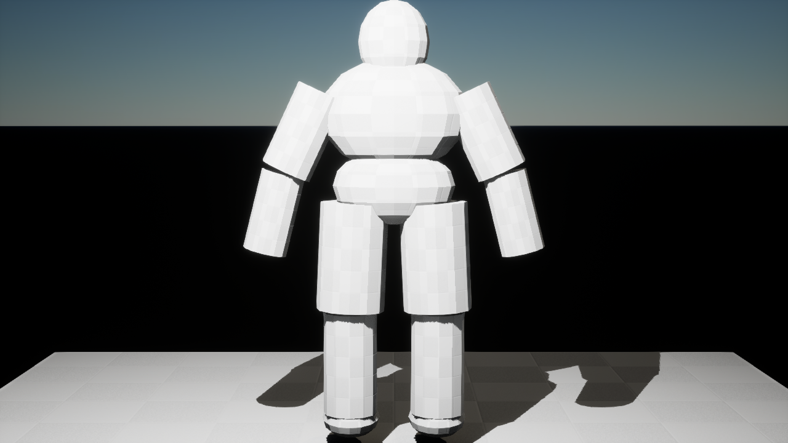
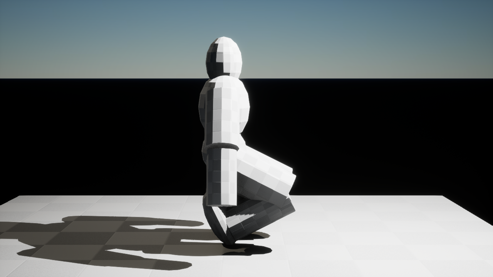
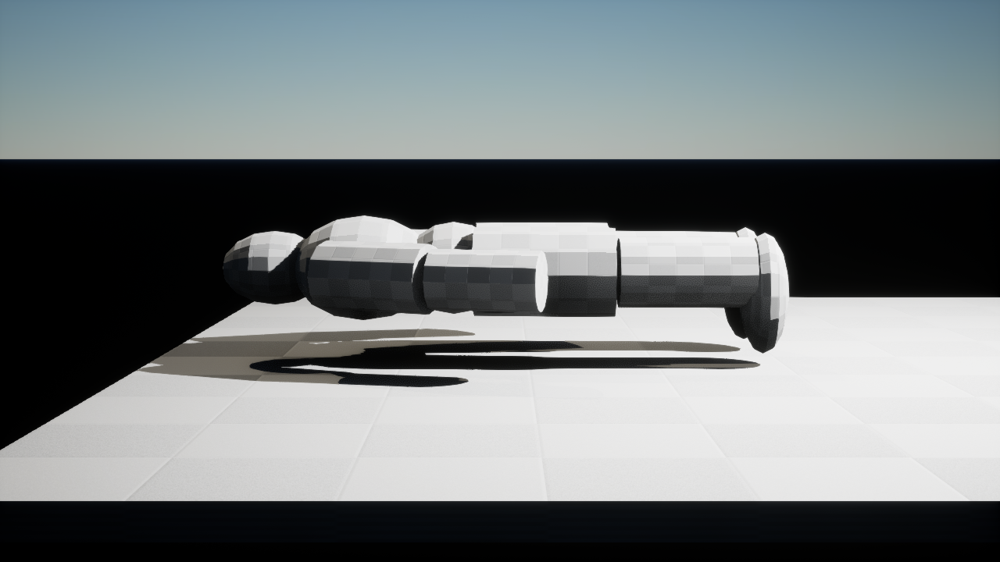
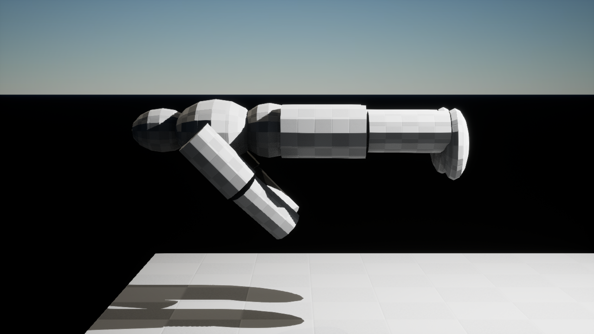
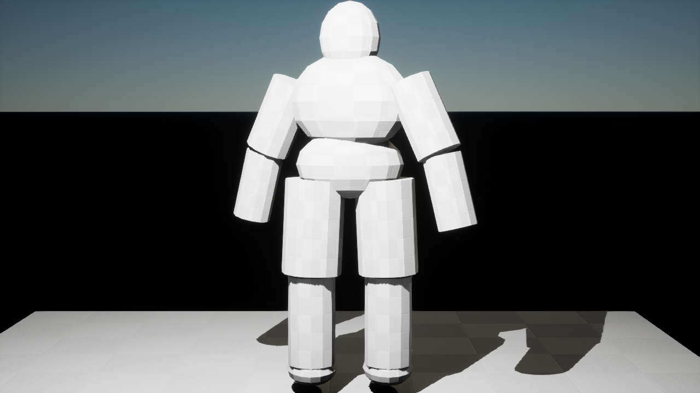

Seven visible regions
Head, chest, abdomen, left and right arms, left and right legs. These colors are QA labels, not final materials.
A 1.8 m mechanical body guide with seven visible injury regions. Review whether standing, crouch, prone, swimming and lean silhouettes give a clear, fair basis for future hitboxes. Tap any image to open it full size on your phone.

Head, chest, abdomen, left and right arms, left and right legs. These colors are QA labels, not final materials.

Full-height baseline and limb spacing.

Compact leg fold and lowered head/chest exposure.

Low horizontal body exposure.

Horizontal body with arm stroke silhouette.

Asymmetric chest and head exposure. The rig also has a mirrored right lean key.